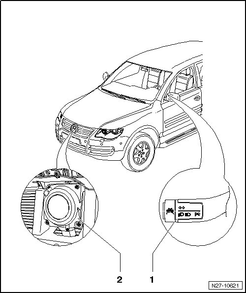

Adaptive Cruise Control Assembly Overview
Adaptive Cruise Control Assembly Overview

1 - Adaptive Cruise Control Button (E357)
The Adaptive Cruise Control Button (E357) is integrated in the turn signal switch on the steering column.
Turn signal switch on steering column, removing and installing --> [ Steering Column Switch ] Steering Column Switch.
2 - Distance Regulation Control Module (J428)
Distance Regulation Control Module (J428) must not be disassembled further and contains the following components:
• Distance Regulation Control Module (J428)
• Adaptive Cruise Control Sensor (G550)
• Distance Regulation Sensor Heater (Z47)
Distance Regulation Control Module (J428), removing and installing --> [ Distance Regulation Control Module ] Distance Regulation Control Module.